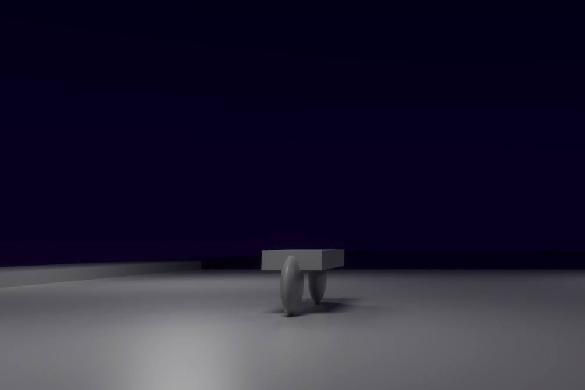
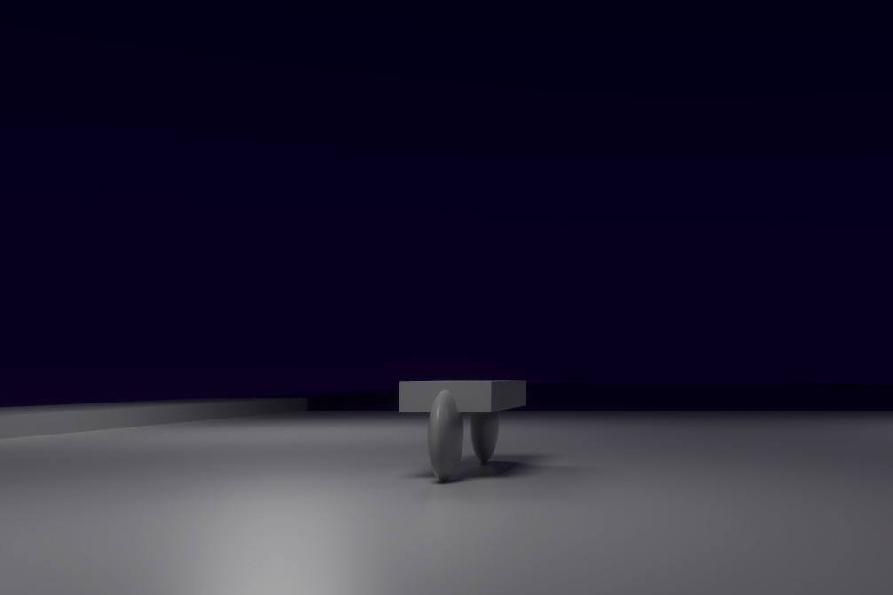

About Me
Who Am I?
I'm Daniel, known as Noelwiz on the internet. I'm a programmer with a love of being creative. I make games, and small projects and always have a few things in progress. I expect to have a computer science degree in spring 2020, with a minor in astronomy. I'm interested in many things, but highlights include linguistics, procedural generation, game design and development, computer graphics, and telling stories. I love trying new things and starting projects.
What About Outside of CS?
Many things. I enjoy, linguistics, histroy, world building, music, and science. I watch a few pop science youtube channels, and podcasts because there's so many interesting thigns to learn. Though, world building really captures the heart of what I'm interested in: it's about learning how the world works and fits together and applying that creatively. I don't think anything really is isolated, and computer science is wonderful because it interacts with so many different fields and areas of knoledge.
I play the trombone, and have since the fifth grade. In High School, I played with our marching band at two different Sea Hawks half time shows, one Victoria Day Parade in Victoria B.C., and I participate in my college's pep band. In Addition to playing music, I also picked up composing on my own and wrote for a few tiny game jam games. Unfortunately I never had a chance to take any music theory classes, but I still enjoy composing for fun.
 
